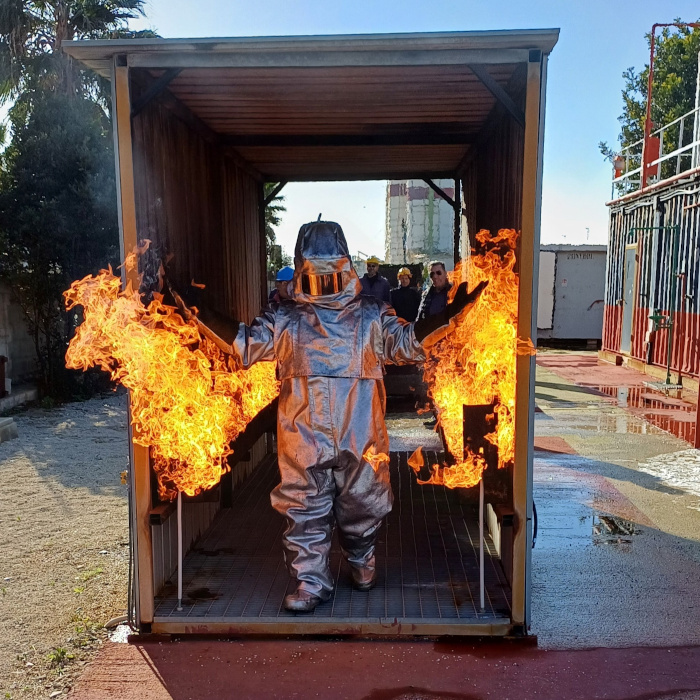
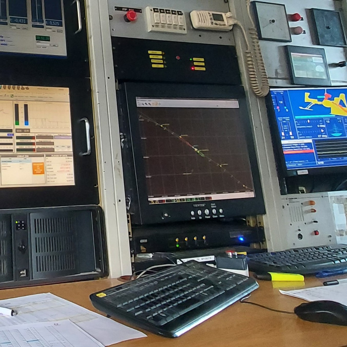
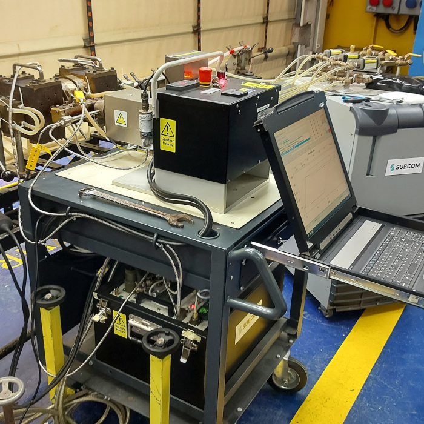
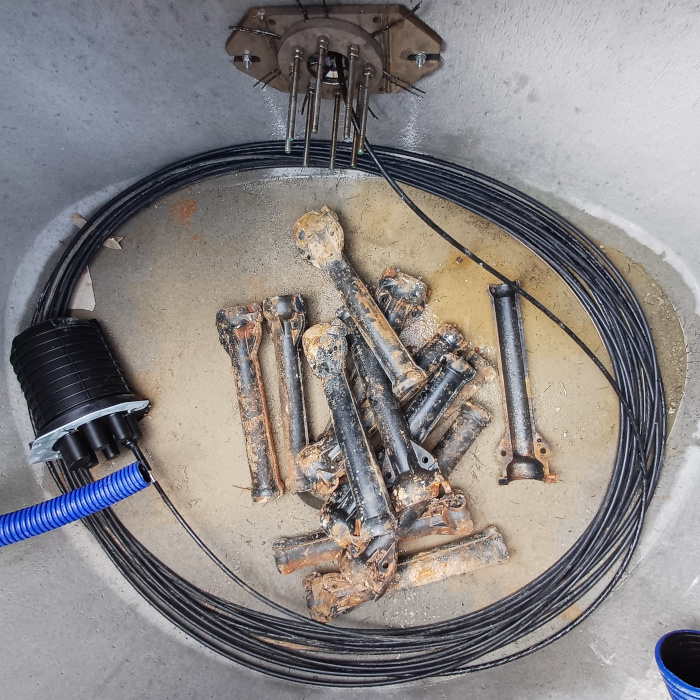
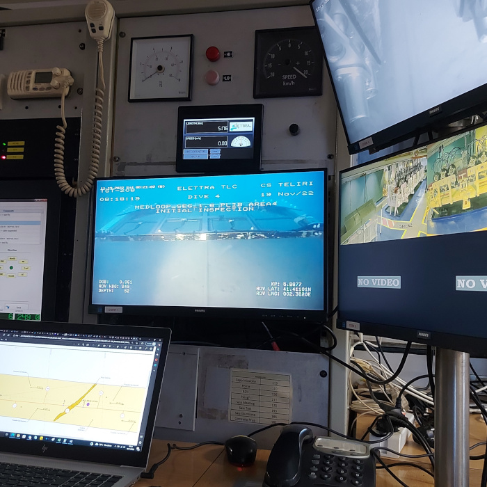
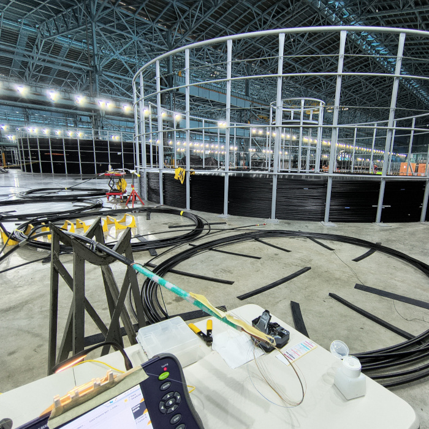
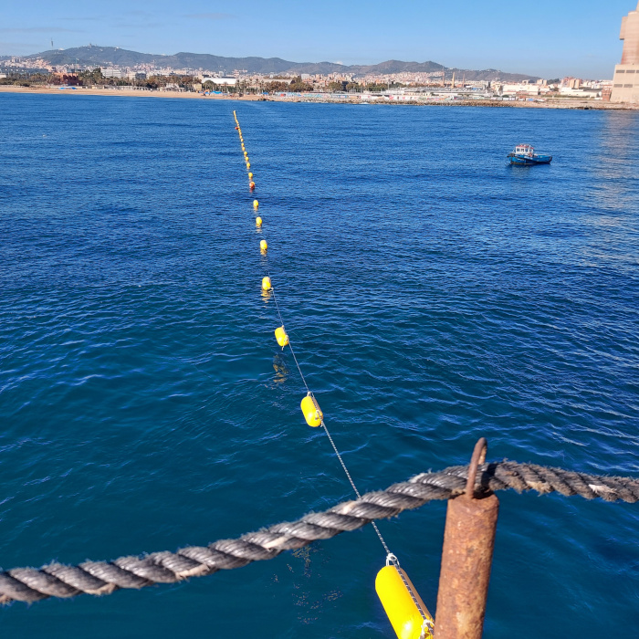
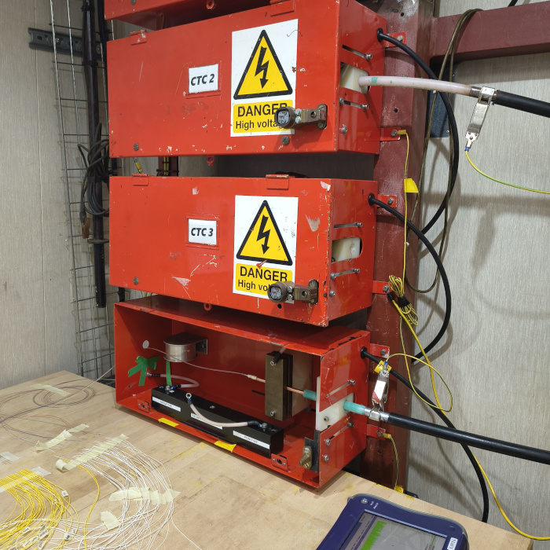

With hands-on experience across all aspects of submarine cable vessel operations, including:
Surface Lay – Plough Operations – ROV Support – Shore-End Installations – Cable Loading & Offloading – PLGR & RC (Pre-Lay Grapnel Run & Route Clearance) – PLIB (Post-Lay Inspection & Burial) – Grapnel Run
This comprehensive experience enables seamless support for both installation and maintenance projects, ensuring safe, reliable, and efficient operations across all phases.








| Project Name | Cable Type | Date |
|---|---|---|
| SMW5 seg. 4.3 | OAL-C4 LOADING | Jul–Sep 2015 |
| Bolano-Paradiso | URC1- Pirelli MF | Dec 2015 |
| EIG | OAL-C4 | Feb 2016 |
| LEV | Tyco Millennia | Feb 2016 |
| IMEWE | OAL-C4 | Mar 2016 |
| Italia-Libia | Pirelli 18.5 | Mar 2016 |
| SMW5 | OAL-C4 OAL-C7 LAY | Apr–May 2016 |
| Licata Linosa | Pirelli M.F./URC1 | Aug 2016 |
| Bari Durazzo | Pirelli MF | Aug 2016 |
| Vulcano Milazzo | Pirelli MF | Dec 2016–Jan 2017 |
| SMW4 | OAL-C5 | Apr 2017 |
| Bari Durazzo | Pirelli MF | May 2017 |
| Bios | OAL-C5 | May 2017 |
| Janna Link 1 | NSW Minisub | Aug 2017 |
| SMW4 | OAL-C4 | Sep 2017 |
| SMW4 | OAL-C4 | Nov 2017 |
| Lamezia-Messina | Pirelli 25mm | Feb 2018 |
| Silphium | URC-1 | Mar 2018 |
| HCMR | ROC-2 | May 2018 |
| Janna Link 1 | NSW Minusub | Aug 2018 |
| SMW4 | OAL-C4 | Sep–Oct 2018 |
| Janna Link 1 | NSW Minisub | Jun 2019 |
| Columbus III | Pirelli 18.5 | Jul 2019 |
| ROCKABILL | Nexans URC-1 5.6 | Jul 2019 |
| Ischia Capri | Pirelli MF | Sep 2019 |
| Capri Massalubrense | Pirelli S280 | Sep 2019 |
| Smw 3 Seg9 | OALC4 | Oct 2019 |
| Smw 3 Seg9 | OALC2 | Oct 2019 |
| Azores Pico S. Maria | NSW MinisubCT | Oct 2019 |
| Licata-Linosa-Lampedusa | Pirelli 18.5 | Nov–Dec 2019 |
| Licata-Linosa-Lampedusa | URC-1 | Nov–Dec 2019 |
| Jayabaya | URC1 | Nov–Dec 2019 |
| GTD Crimar | NSW Minisub | Feb 2020 |
| Metiss | OAL-C5 OAL-C7 | Apr–Jul 2020 |
| Pelagie (Linosa-Lampedusa) | URC-1 Pirelli MF | Aug 2020 |
| Anacapri - Ischia | Pirelli MF | Aug 2020 |
| West Africa | OAL-C4 OAL-C7 | Nov–Dec 2020 |
| Janna Link 2 | NSW MinisubCT | Feb 2021 |
| Med Nautilus R05 R06 | OAL-C5 URC2 | Mar 2021 |
| MENA | OAL-C4 | Mar 2021 |
| EQUIANO | OAL-C4 OAL-C7 | May–Jun 2021 |
| EQUIANO | OAL-C4 OAL-C7 | Jul–Aug 2021 |
| SHARE | ROC-2 | Nov–Dec 2021 |
| Trapani Kelibia | Pirelli S560 | Jan 2022 |
| Thetis | URC-1 | Jan–Feb 2022 |
| Thetis | URC-1 | Apr–Jun 2022 |
| Mikonos Syros R05 | Siemens Flexible | May 2022 |
| WA Mauritania S6 | OALC-4 | Jul 2022 |
| WA Mauritania S6 | OALC-4 | Aug–Sep 2022 |
| Medloop | OALC-4 OALC-7 | Nov–Dec 2022 |
| Ischia Anacapri | Pirelli MuFi | Jan 2023 |
| Thetis A3 R01, Seg.04 | URC 1 | Feb 2023 |
| Palmi Mortelle R 02 | URC1-NSW Minisub CT | Mar 2023 |
| Janna Link 2 | NSW Minisub CT | Apr 2023 |
| T3 SCS | OALC-4 OALC-7 | May–Jun 2023 |
| INFRATEL | NSW Minisub R | Aug–Oct 2023 |
| INFN INGV EMSO SMARTCABLE | Pirelli 18.5 | Nov–Dec 2023 |
| IFRIQYA | HORC-1 | Jan–Feb 2024 |
| BLUERAMAN | OALC-4 OALC-7 | Mar–Apr 2024 |
| INFRATEL | NSW Minisub R | May–Jun 2024 |
| BLUERAMAN | OALC-4 OALC-7 | Jun–Jul 2024 |
| SMW4 S4.1 | OAL-C4 | Aug–Sep 2024 |
| PIM S6R1 | NSW Minisub R | Sep 2024 |
| PIM S13R2 | NSW Minisub R | Sep–Oct 2024 |
| PIM S10R3 | NSW Minisub R | Oct 2024 |
| Unitirreno | OALC-4 | Dec 2024 |
| SMW5 4.1 R2 | OALC-4 | Mar 2025 |
| Unitirreno | OALC-4 | Jul 2025 |
The new Southeast Asia-Middle East-Western Europe 5 (SEA-ME-WE 5) submarine cable system is a matchless, PoP to PoP, multi-regional data superhighway. It is a technological breakthrough which marks a global communications milestone. Designed with the latest upgradable 100Gbps technology enabling initial system capacity of 24 Tbps, it will provide the lowest latency, further enhancing the diversity and resilience to the heavily loaded Asia to Europe route.
The Jayabaya Line will connect between Jakarta and Surabaya. This network will consist of three submarine lines; Jakarta to Cirebon, Cirebon to Semarang, and Semarang to Surabaya. With a total of 915 km of undersea fiber optic cable will connect Jakarta & Surabaya (Jakarta-Cirebon-Semarang-Surabaya)
The Rockabill project (also know as Super Highway 1) is a new combination of submarine cable and terrestrial links that connect Dublin to London and Lowestoft, on the eastern coast of the UK. The fibre network is a duct and dark fibre infrastructure system using a ultra-low-loss fibre to reduce cost per bit, while the system route meets the needs of Clients who want to transport multiple terabits of traffic.
The METISS submarine cable (MEltingpoT Indianoceanic Submarine System), is the latest addition to Emtel's diverse connectivity to the World. Activated in March 2021, METISS is a new-generation 3,200 KM optical fiber cable connecting Mauritius, Reunion Island, Madagascar and South Africa. The cable landing station is hosted in Emtel's Data Centre in Arsenal. With a capacity of multi Terabits per second and advanced technology, the METISS cable will ensure that your growing demand for data are met for the next few decades.
The West Africa Cable System (WACS) is a submarine communications cable linking South Africa with the United Kingdom along the west coast of Africa that was constructed by Alcatel-Lucent. The cable consists of four fibre pairs and is 14,530 km in length, linking from Yzerfontein in the Western Cape of South Africa to London in the United Kingdom. It has 14 landing points, 12 along the western coast of Africa (including Cape Verde and Canary Islands) and 2 in Europe (Portugal and England).
Equiano is a private transatlantic communications cable that connects western Europe (Portugal) with southern Africa (Melkbosstrand, South Africa). Branching points along the way connect to Togo, Nigeria, the island of St. Helena and Namibia. The cable was announced by Google in June 2019 and was eventually launched in September 2022, having reached its final destination of South Africa.
HMN Tech has realized the marine deployment of the Senegal Horn of Africa Regional Express (SHARE) submarine cable system, with landfalls in both Senegal and Cape Verde. Financed by the Senegalese State and operated by the Agence De l'Informatique de l'Etat (ADIE), the 720km system transmits a total design capacity of 16Tbps between Dakar Senegal, and Praia in Cape Verde.
The Medloop cable system is a submarine cable connecting Genoa, Marseille, Ajaccio and Barcelona. The Medloop cable system is developed by Elettra Tlc S.p.A., a subsidiary of Orange Marine, and supplied by Alcatel Submarine Networks (ASN), ready for service in 2023.
T3 submarine cable system connects South Africa with Mauritius, with branching units to Reunion Island and Madagascar. T3 submarine cable project is developed by Mauritius Telecom, in a partnership with Liquid Telecom. T3 cable system consists of 4 fiber pairs in its trunk, with design capacity of 13.5 Tbps per fiber pair and 54 Tbps for the whole system. Alcatel Submarine Networks (ASN) has been contracted to supply and install the T3 submarine cable system.
Il Piano "Collegamento Isole Minori", è finanziato e promosso dal Dipartimento della trasformazione digitale con un investimento di oltre 45 milioni di euro del PNRR, è attuato da Infratel Italia S.p.A e realizzato dall'operatore aggiudicatario Elettra Tlc. Il Piano ha il fine di fornire connettività adeguata a 21 isole minori delle regioni Lazio, Puglia, Sicilia, Toscana e Sardegna.
Having real-time information to study the structure of the Earth, natural disasters, oceans and deep sea areas: these and infinite other potentials of SMART Cable, an innovative underwater device installed by a team of researchers and technologists from the National Institute of Geophysics and Volcanology (INGV) in the western sector of the Ionian Sea, off the coast of eastern Sicily.
The Ifriqiya submarine cable system is the Tunisian branch of the PEACE cable system connecting Asia, Africa and Europe. Spanning 950 km from Bizerte to the main trunk of PEACE MED connecting Marseille, France, and Abu Talaat, Egypt. It has an overall capability of around 3 Tbps and was ready for service on March 3, 2024, owned and operated by Ooredoo Tunisia.
The BlueMed cable will cross the Tyrrhenian Sea connecting Sparkle's Sicily Hub open data center in Palermo with Genoa's new open landing station. With a capacity up to 240 Tbps and about 1,000 km long, BlueMed will provide advanced connectivity between Middle East, Africa, Asia and the European mainland hubs with up to 50% latency reduction than existing terrestrial cables connecting Sicily with Milan.
New Unitirreno cable will be the first 24 fiber pair Open Cable system in the Mediterranean Region delivering cutting-edge submarine technologies to support continuously increasing national and international bandwidth requirements.
A new double Submarine Cable System, named DOS CONTINENTES, linking Spain's south coast with Ceuta.